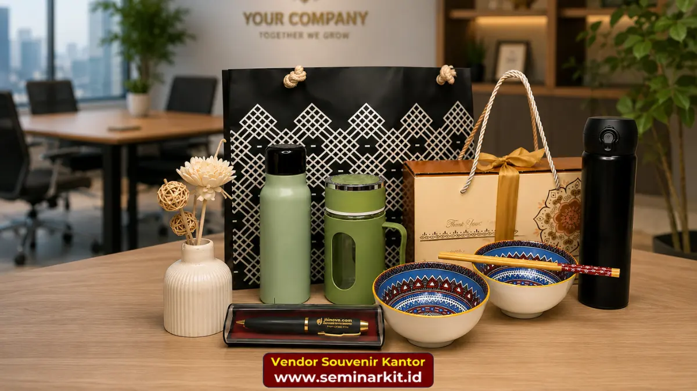

Souvenir kantor adalah barang cendera mata bermerek yang digunakan perusahaan untuk membangun relasi dengan mitra bisnis, klien, dan karyawan.
Souvenir ini biasanya dicetak dengan logo perusahaan pada produk seperti tumbler, plakat, atau tas eksekutif. Memilih souvenir kantor yang tepat dapat memperkuat citra profesional dan mempererat hubungan bisnis jangka panjang.
- Souvenir kantor berfungsi sebagai media branding sekaligus bentuk apresiasi kepada klien dan karyawan.
- Pemilihan bahan, desain, dan kualitas cetak logo menentukan kesan profesional perusahaan.
- Souvenir custom logo umumnya dipesan dalam jumlah besar untuk acara korporat, seminar, atau hari jadi perusahaan.
- Proses pemesanan yang efisien mencakup konsultasi desain, sampel produk, dan jadwal produksi yang jelas.
- Vendor souvenir kantor yang berpengalaman membantu perusahaan menghemat waktu dan menjaga konsistensi kualitas.
Bagi perusahaan yang ingin memesan souvenir kantor berkualitas dengan proses cepat, tim kami di vendorsouvenirkantor.web.id siap membantu mulai dari konsultasi desain hingga pengiriman ke seluruh Indonesia.
Apa Itu Souvenir Kantor dan Mengapa Perusahaan Membutuhkannya?
Souvenir kantor adalah barang fungsional atau dekoratif yang dicetak dengan identitas visual perusahaan dan diberikan kepada pihak eksternal maupun internal sebagai bentuk representasi merek.
Fungsi utamanya bukan sekadar hadiah, melainkan alat komunikasi non-verbal yang menyampaikan nilai dan profesionalisme perusahaan setiap kali digunakan penerimanya.
Dalam praktik corporate gifting, souvenir kantor umumnya digunakan pada momen tertentu seperti kunjungan klien, penandatanganan kerja sama, seminar internal, hingga perayaan hari jadi perusahaan.
Berdasarkan tren industri promotional merchandise di kawasan Asia Tenggara pada periode 2023-2025, permintaan souvenir korporat custom logo cenderung meningkat seiring pertumbuhan sektor MICE (meeting, incentive, convention, exhibition) dan semakin aktifnya perusahaan membangun program loyalitas klien melalui pendekatan non-transaksional.
Selain itu, riset perilaku konsumen di sektor B2B secara umum menunjukkan bahwa barang fisik bermerek memiliki tingkat retensi ingatan (brand recall) yang lebih tinggi dibandingkan promosi digital sekali lihat, karena souvenir digunakan berulang kali dalam jangka panjang.
Perusahaan yang konsisten memberikan souvenir kantor berkualitas kepada mitra bisnis cenderung dipandang lebih matang secara organisasi. Hal ini karena detail kecil seperti pemilihan bahan premium dan hasil cetak logo yang rapi mencerminkan standar kerja perusahaan secara keseluruhan.
Souvenir Kantor untuk Mitra Bisnis: Apa Saja Pilihannya?
Souvenir kantor untuk mitra bisnis idealnya dipilih dari kategori barang eksekutif yang mencerminkan kesan elegan dan profesional, seperti tumbler stainless custom logo, buku agenda kulit, plakat akrilik, hingga hampers kantor berisi produk premium.
Pemilihan jenis souvenir sebaiknya disesuaikan dengan posisi penerima dan konteks acara.
Untuk mitra bisnis level eksekutif, produk seperti pena logam bertatah logo, tempat kartu nama kulit, atau plakat penghargaan akrilik sering menjadi pilihan karena kesan mewah namun tetap fungsional.
Sementara untuk momen relasi bisnis yang lebih santai, seperti gathering atau kunjungan lapangan, tumbler custom logo atau tote bag kanvas premium lebih sesuai karena praktis digunakan sehari-hari.
Beberapa faktor yang perlu dipertimbangkan saat memilih souvenir untuk mitra bisnis meliputi:
- Kesesuaian nilai produk dengan tingkat relasi bisnis, agar tidak terkesan berlebihan maupun terlalu sederhana.
- Kualitas cetak logo yang presisi, karena logo yang buram atau pudar justru merugikan citra perusahaan.
- Daya tahan material, terutama untuk souvenir yang diharapkan digunakan dalam jangka panjang.
- Kemasan produk, karena kemasan yang rapi turut membentuk kesan pertama penerima souvenir.
Tim kami di vendorsouvenirkantor.web.id menyediakan berbagai pilihan souvenir kantor untuk mitra bisnis dengan opsi custom logo dan konsultasi desain gratis sebelum produksi massal dimulai.

Bagaimana Cara Kerja Pemesanan Souvenir Kantor Custom Logo?
Proses pemesanan souvenir kantor custom logo umumnya terdiri dari lima tahap utama, yaitu konsultasi kebutuhan, pemilihan produk dan bahan, desain logo pada mockup, produksi sampel, dan produksi massal sebelum pengiriman.
Alur ini dirancang agar hasil akhir sesuai dengan identitas visual perusahaan tanpa revisi berulang yang memakan waktu.
Tahap konsultasi biasanya mencakup diskusi mengenai jumlah pesanan, anggaran, tujuan penggunaan souvenir, serta tenggat waktu acara.
Setelah kebutuhan jelas, tim produksi akan merekomendasikan jenis produk dan teknik cetak yang paling sesuai, misalnya sablon, bordir, laser engraving, atau emboss, tergantung material yang dipilih.
Setelah desain disetujui, umumnya vendor akan membuat sampel produk terlebih dahulu sebelum masuk ke tahap produksi massal. Tahap ini penting untuk memastikan warna, ukuran logo, dan kualitas bahan sesuai ekspektasi sebelum dicetak dalam jumlah besar.
Perusahaan yang memesan dalam skala besar sebaiknya memperhitungkan waktu produksi minimal dua hingga tiga minggu sebelum tanggal acara, agar ada ruang untuk revisi apabila diperlukan.
Untuk mempercepat proses ini, Anda dapat langsung menghubungi tim kami melalui vendorsouvenirkantor.web.id dan mendapatkan estimasi harga serta jadwal produksi secara transparan.
Apa Saja Kesalahan Umum saat Memilih Souvenir Kantor?
Kesalahan paling umum dalam memilih souvenir kantor adalah mengutamakan harga murah tanpa memperhatikan kualitas bahan dan hasil cetak logo, sehingga souvenir cepat rusak dan justru menurunkan citra perusahaan.
Kesalahan ini sering terjadi ketika pemesanan dilakukan mendekati tenggat waktu tanpa perencanaan matang.
Selain itu, beberapa kesalahan lain yang kerap ditemui meliputi:
- Memilih produk yang tidak relevan dengan kebutuhan penerima, misalnya memberikan souvenir dekoratif kepada klien yang lebih membutuhkan barang fungsional.
- Mengabaikan konsistensi warna logo dengan brand guideline perusahaan.
- Tidak melakukan pengecekan sampel sebelum produksi massal, sehingga kesalahan cetak baru diketahui setelah barang jadi dalam jumlah besar.
- Memesan dalam waktu terlalu mepet, yang berisiko menurunkan kualitas kontrol produksi.
Menghindari kesalahan ini dapat dilakukan dengan bekerja sama dengan vendor yang menyediakan tahap sampel dan konsultasi desain sebelum produksi massal, seperti layanan yang tersedia di vendorsouvenirkantor.web.id.
Berapa Kisaran Biaya Souvenir Kantor Custom Logo?
Biaya souvenir kantor custom logo umumnya dipengaruhi oleh jenis produk, bahan, teknik cetak, dan jumlah pesanan, sehingga kisaran harga dapat bervariasi cukup luas antara satu jenis produk dengan lainnya.
Produk berbahan dasar seperti mug keramik atau pouch kanvas umumnya berada di kisaran harga lebih terjangkau dibandingkan produk berbahan kulit asli atau logam premium.
Semakin besar jumlah pesanan, umumnya harga per unit akan semakin efisien karena biaya produksi dan setup cetak dapat dibagi ke lebih banyak unit.
Selain itu, teknik cetak seperti laser engraving pada logam atau emboss pada kulit biasanya membutuhkan biaya tambahan dibandingkan sablon standar, namun menghasilkan tampilan yang lebih premium dan tahan lama.
Untuk mendapatkan estimasi biaya yang akurat sesuai kebutuhan perusahaan Anda, tim kami menyediakan layanan konsultasi dan penawaran harga secara langsung melalui vendorsouvenirkantor.web.id.
Souvenir kantor bukan sekadar pelengkap acara, melainkan investasi jangka panjang untuk membangun citra profesional perusahaan di mata mitra bisnis dan karyawan.
Pemilihan produk yang tepat, kualitas cetak logo yang presisi, serta proses produksi yang terencana akan menentukan seberapa besar dampak souvenir terhadap persepsi merek perusahaan Anda.
Jika perusahaan Anda membutuhkan souvenir kantor custom logo dengan kualitas terjamin dan proses produksi yang jelas, segera konsultasikan kebutuhan Anda bersama tim kami di vendorsouvenirkantor.web.id untuk mendapatkan penawaran terbaik.

Banner promosi: klik gambar untuk langsung terhubung ke WhatsApp tim sales.